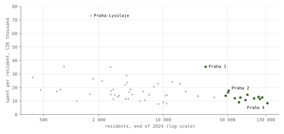
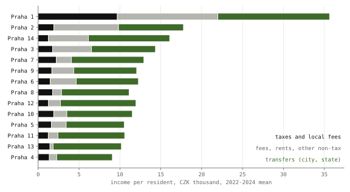

Prague, measured · Part 3 of 5 · city-district budgets, 2022–2024 · pre-registered · the city's grants to its districts, 2015–2023
One city, 57 budgets
Prague runs on two levels, the city and 57 districts with their own mayors, councils and budgets. The thirteen large districts, home to three Praguers in four, spend between 8 346 and 17 604 crowns a year per resident and Praha 1 spends 35 320, and for the median district 76 % of income is passed on by the city and the state. A pre-registered study of the grants the city adds during the year asks whether a district receives more when its mayor's party joins the city's governing coalition and detects no such premium; because the design could only have detected a very large one, the registered reading is "not detected" rather than "none".
- spent per resident, large districts
- 8 346–17 604 CZK a year, 2022–2024 mean
- Praha 1
- 35 320 four times Praha 4
- income from transfers
- 76 % median district · 38–92 %
- alignment premium in the city's in-year grants
- not detected −37 % · 95 %: −115 to +21 % · p = 0.70
- smallest premium the design could detect
- ≈ 100 % at 80 % power; published premiums are a third to a half
- registered tests passed
- 0 of 2 Holm, family-wise 5 %
Overwhelmed? Here's the short version
- Prague's thirteen large districts spend between 8 346 and 17 604 crowns a year per resident (2022–2024) and Praha 1 spends 35 320. For the median district, 76 % of income is passed on by the city and the state.
- A pre-registered study of the city's own in-year grants asked whether a district receives more when its mayor's party joins the city coalition. It detects no such premium: the pooled estimate is −37 %, with a 95 % interval from −115 to +21 % (p = 0.70), and both registered hypotheses are not supported.
- The equivalence test is inconclusive, so a 20 % premium is not ruled out either. The sign depends on the districts with ODS mayors, the party that entered the coalition in 2023; leaving them out turns the estimate to about +14 %.
- The design could detect only a premium of about 100 %, two to three times the published ones, so a modest premium of the size found elsewhere may exist and go unseen. Two coalition changes cannot separate alignment from anything else the switching districts shared.
Photo: Praguegirl15 · CC BY-SA 4.0, colour held · Libeň chateau, Praha 8 town hall

The city of Prague keeps the big jobs: public transport, the main roads, the city police. Its 57 districts, from Praha 4 with 135 712 residents to Praha-Nedvězí with 381, run much of daily life, including most primary schools and kindergartens, local streets and green spaces, and part of social services. Each reports its accounts to the Ministry of Finance, which publishes them in MONITOR1. The spending and income figures here are the actual amounts of every district for 2022, 2023 and 2024, divided by the district's residents at the end of each year2 and averaged over the three years, because one school built in one year can triple a small district's budget.
Most of that money reaches the districts from the city and the state. Part of what the city sends is decided grant by grant during the year, and a pre-registered study, with rules fixed in advance, asks whether that in-year money goes disproportionately to districts whose mayors belong to the parties governing the city.
Spending per resident, 2022–2024

Praha 4, the largest district, spends 8 346 crowns per resident, Praha 13 spends 9 030 and Praha 2, at the top of the group, 17 604, so the large districts sit close together at the bottom of the city. The small districts on the edge spread from about 8 000 to 35 000, and their figures are driven by single projects: Praha-Lysolaje, with 1 639 residents, spent 119 531 crowns per resident in 2022 and 27 118 in 2024, and 73 % of its three years' spending was investment. The median district spends 14 669.
Praha 1 spent 35 602, 34 564 and 35 794 crowns per resident in the three years, four times as much as Praha 4 each time, and so sits apart from both groups in every year.
Where district income comes from

Transfers from the city and the state are 76 % of the median district's income, and 38–92 % across the 57, so what a district raises for itself is usually the smaller part of its budget. Praha 1 raises more than any other district, 9 676 crowns per resident in taxes and local fees against Praha 4's 1 363, and much of it comes from tourism. In 2024 Praha 1 collected 82.9 million crowns in the fee on overnight stays and 114.2 million for the use of public space, up from 47.5 and 97.3 million in 2022. It also takes in 12 308 crowns per resident in rents, sales and other income of its own, against Praha 4's 905, and 13 655 in transfers, against Praha 4's 6 804. Praha 1 and Praha 2 are the only districts where transfers are less than half of income.
How the city divides its money between the districts is set by its own rules and resolutions. The accounts record the amounts each district received, but they do not show the formula or the decisions behind them, which is why the grants study below works from the city's own lists.
What the districts spend on
In the thirteen large districts the town hall itself, the section that covers administration, the council and the office, takes a median 29 % of spending, from 24 % to 38 %. Education, above all the district's kindergartens and primary schools, takes 32 %, from 18 % to 42 %. Social services take 7.5 %, from 2 % to 17 %, and investment of every kind 28 %, from 14 % to 48 %. The same service can sit in different places in different districts' accounts, so the shares compare the districts' books as much as their priorities.
All 57 districts
The table lists every district with the list that won the most seats in the 2022 district election3. The largest list is not always the mayor's, because a coalition of smaller lists can govern. Clicking a heading sorts the table, and the buttons pick large or small districts.
| District | Residents | Per resident | Town hall | Education | Social | Investment | From transfers | Largest list, 2022 |
|---|
Per resident: CZK spent a year, mean of 2022–2024. Shares are of spending, except "from transfers", which is of income. Residents at the end of 2024. Data: districts.json.
The city's in-year grants and the alignment question
Part of the money the city sends its districts follows a formula it publishes each December, built from residents, area, pupils, green space and roads. The rest comes during the year, as grants for a school roof, a park, a fire brigade or a playground. Each of these is decided by the city council or the city assembly and listed, with its resolution and purpose, in part III of the city's closing accounts4.
Discretionary money of this kind is where studies elsewhere have found an alignment premium, meaning that municipalities governed by the same party as the level above receive more. Studies of Spain5, Brazil6 and Italy7 find that aligned municipalities receive roughly a third to a half more (about 40 %, 26–41 % and 36–47 %), and a study of Portugal finds 19 %8. In Germany the sign depended on which bloc governed the state, with +25 % under one and −20 to −40 % under the other9. The same question is asked of Prague here under a design that three referees reviewed and that was committed before any grant was added up10.
In Prague a district "becomes aligned" when the city coalition changes, and the coalition changed only twice in the period, so the switches come from parties changing sides at city level rather than from anything the districts did. The study can therefore separate the effect of alignment from whatever else happened to one party's districts only as far as two events allow.
How this was done
The Ministry's bulk extract of municipal accounts leaves the Prague districts out, so the budget figures above come from MONITOR's public interface, which serves the same reports1. Income and spending include the money a district moves between its own accounts, and own-fund transfers (items 4131, 4132, 4140) are counted as the district's own revenue, not as transfers. Spending sections are grouped by name, because the same one, education, is coded 31 in most districts' 2024 accounts and 32 in eleven. The 57 districts' residents add up to 1 397 880, Prague's population at the end of 20242. Every one of those numbers is produced by tools/praha/districts.py.
For the grants study, the district lists of the city's closing accounts for 2014–2025 were downloaded and parsed, 18 311 lines in all, with at least 98 % of the item lines read in every list. The outcome is the city's own grants, the money the city pays a district. Money a district pays back to the city is left out, which covers loan repayments, returned grants and transfers, 162 lines and 1.1 billion crowns in 2016–2023. Grants the state passes through the city, EU operational programmes and the year-end settlements are left out as well.
The city's own grants still include three kinds of money that are not discretionary in the usual sense. As shares of all the city's own grants in 2016–2023, income-tax refunds passed on to districts make up 11–28 % a year, shares of the gambling levy 4–10 % and repayable loans 1–13 %, together 20–39 % a year. The registered outcome keeps them, and a check without them is reported with the robustness results.
Each grant is dated by the assembly resolution that approved it, matched by number to the session dates in the roll calls of Part 111, and that date decides which coalition the grant belongs to. Grants the outgoing, caretaker council decided in January and February 2023 count for the old coalition. A district's grants are measured against the formula money it received in 2016, so that a small district and a large one can be compared, and the per-resident figures are shown alongside.
A parsing error found after the first results changed 2023 from 25 million to 4.1 billion crowns and moved H1 from +19 % (p = 0.21) to −38 %. The 2023 list prints its amounts in the column the parser did not read, and the error was found because the 2023 total was implausible, not because of the direction of H1. An independent audit then found two more problems: the parser counted money districts paid the city as grants, and it dated some approvals to the wrong day of a session held over several days. With both corrected, H1 is −37 %. All three runs are recorded in the design file10.
Every mayor of every district from the 2014 elections to September 2026 was recorded, with sources, in two independent coding passes by a language model. The two passes named the same mayor for 98.9 % of the 627 district-years, and the seven that differed were settled by hand before any grant was added up. The party comes from the official candidate registers3, and the independent audit checked about 40 spells against official sources, all of which matched. A district is aligned in a year if its mayor on 30 June belongs to, or was nominated by, a party of the city coalition that day.
The coalition changed in November 2018, when the Pirates, Praha Sobě and TOP 09 replaced ANO, ČSSD and the Greens, and in February 2023, when ODS replaced Praha Sobě. At each change, districts that turned aligned are compared with districts unaligned throughout, before and after, in a difference-in-differences stacked by event12. The p-values come from randomisation inference, which reshuffles which districts switched within each tier of districts, 9 999 times13, and the intervals use a method for comparisons with few treated units14. Effects are stated in % of the control districts' usual grants, defined as the average, over the two changes, of their level in the three years before.
A power simulation, run on the real switches before any grant was added up, put the smallest detectable premium at about 100 % of a district's usual grants, two to three times the published premiums. The design says in advance that a non-rejection is to be read as "not detected", never as "no premium".
The tests
| Hypothesis | Test | Result |
|---|---|---|
| H1 · districts that become aligned receive more of the city's own in-year grants | switch-in effect > 0 | not supported −37 %, p = 0.70 |
| H2 · any premium is carried by investment grants | investment effect > 0 and > non-investment | not supported p = 0.76 |
Percentages are of the control districts' usual grants in the years before each change. p-values are one-sided, from randomisation inference; the smallest attainable is 0.0001. Holm thresholds15 are 0.025 and 0.05, and neither test passes. The equivalence test (is any premium within ±20 %?) is inconclusive, p = 0.53. A parsing error found after the first results changed 2023 from 25 m to 4.1 bn CZK and moved H1 from +19 % (p = 0.21) to −38 %. The corrections for flow direction and dating then moved it to −37 %.
The city's in-year grants by year

Beyond the formula, the city gives its districts between 2.2 and 5.4 billion crowns a year in this way, and investment is between 49 and 73 % of it (2016–2023). Over all district-years, the median is 1.04 times the district's 2016 formula allocation. The grants arrive unevenly, and in the median district the year-to-year spread is 60 % of its average, since a single school extension can arrive in one year.
Districts that became aligned in 2018 and 2023
At each change the comparison takes the districts that turned aligned and stayed so, and the districts that stayed unaligned throughout. In 2018, 7 districts turned aligned for the three years after, against 31 that stayed unaligned. In 2023, 23 turned aligned against 17, and that change made 34 of the 57 districts aligned, up from 14.

Before each change the two groups moved similarly, and the joint pre-trend test gives p = 0.97. After the 2018 change, districts that turned aligned received more in the first year (+70 %) and about the same in the next two, which over the three years, against the three before, comes to +20 %. After the 2023 change they received less, −59 % against 2022 and −67 % against the three years before. Pooled, the change on becoming aligned is −37 % of the controls' usual grants, with a 95 % interval from −115 to +21 %.

The equivalence test does not rule out a 20 % premium (upper side p = 0.11), nor a large shortfall. The design could detect only a change of about 100 %, and the pooled estimate, −37 %, is far from that.
Thirty districts had a mayor elected as an ODS member or nominee at some point in 2016–2023, and ODS is the party that entered the coalition in 2023. Leaving all of them out turns the estimate to about +14 %, while leaving out the districts of any other party keeps it negative, between about −35 and −55 %. The sign therefore depends on the districts whose mayors come from the party that entered in 2023, and this design cannot say whether that reflects alignment or anything else those districts shared. A permutation that pretends other parties had entered the coalition instead places the observed result below 19 of the 20 possible sets (p = 0.95).
H2 expected any premium to come as investment, the visible kind of grant. The pooled shortfall is all in investment grants (−39 %), while non-investment grants changed by +2 %. With no premium to split, H2 is not supported (p = 0.76).
Robustness

Six of the 36 specifications give a positive estimate, and none has a p-value below 0.05, whether from randomisation, the wild cluster bootstrap17 or small-sample clustered errors1819. The estimate depends on how alignment is defined: defining it by who holds most assembly seats, rather than by the mayor, makes it more negative (−63 %), and counting a district as aligned when its largest list merely includes a coalition party brings it close to zero (−10 %).
Without the loans, gambling-levy shares and tax refunds the estimate is −43 %; counting money districts paid the city as negative grants gives −36 %; and taking alignment from the coders' recorded party membership, which treats non-members nominated by a coalition party as unaligned, also gives −36 %, all similar to the registered −37 %. Other estimators agree in direction, with a regression form of the same comparison at −13 % (clustered p = 0.68; wild bootstrap p = 0.64) and an estimator robust to effects that differ between switches20 at −14 % (95 %: −76 to +32 %). A placebo change between 2020 and 2021, when no coalition changed, gives −18 % (p = 0.79).
Dropping one control district, Troja, brings the estimate to about 0 %, while no other district moves it by more than 9 points.
The 12 districts that left alignment at the two changes (8 in 2018, 4 in 2023) received about as much as those aligned throughout (6 and 10), at −7 %, p = 0.50. Twelve further switches happened mid-term, outside the two changes, and they enter only the heterogeneity-robust estimator.
The districts' own reports to the Ministry of Finance for 2022–20251 give the same comparison from the receiving side, because they show the unbudgeted in-year transfers each district received. Districts that became aligned in 2023 received 2 100 crowns less per resident a year than the controls (p = 0.77), and 2 200 less once adjusted for their slower population growth2.
Budget plans, capital spending and the 2024 formula
Nearly every district ends the year better off than its approved budget said, 54 of 57 in 2022–2025, and the median district does better by 4 448 crowns per resident a year. The in-year money accounts for the gap, because once the transfers that arrived during the year and were not in the approved budget are taken out, the median district ends slightly worse than planned (−1 096 crowns per resident). The comparison is descriptive and shows that districts do not budget the city's in-year grants; it cannot show whether they save them.
The median district spends 47 % of its amended capital budget within the year, and the slope on size within the same tier is indistinguishable from zero (p = 0.98).
For 2024 the new coalition replaced the allocation formula with last year's amount plus a top-up tied to the tax forecast. Allocations rose by a median of 10 %, on average by 19 % in districts not aligned in 2024 and by 12 % in aligned ones. This is shown, not tested, because under the new rule the change follows each district's previous allocation.
What changed after registration
Some changes concern what was known or decided apart from the results. One figure was seen before registration, while the lists were being parsed: one 2025 total for one district, which is outside every test window. Choices the design left open were made and recorded. They cover the denominator of the percentages, the exact form of the equivalence test, a simplified HonestDiD interval, a two-year placebo window, the set of parties in the party-level permutation, and the heterogeneity-robust estimator, which was implemented directly rather than with its authors' package.
The test window itself changed, because the years after 2023 were dropped. The city's lists change format in 2024, and the registered check compared the two formats where both exist (2019–2023). It found an agreement of 0.72, below the 0.9 required, so the 2023 change is tested on 2023 alone; recomputed after the corrections below, the agreement is 0.79, still below the bar. Power is therefore weaker than simulated. The simulation assumed three years after the 2023 change, and the test has one year, with 23 switching districts against 17 controls.
Three corrections were made after the results were seen, each disclosed with the runs before and after it: the 2023 amounts, the direction of flows, and the dating of approvals when a session sat on several days. The district-side covariate adjustment was triggered in the first run and not in the corrected one. Its trigger, a population-growth imbalance with p below 0.1, gave p = 0.098 with 1 999 draws and p = 0.11 with 9 999, and the adjusted estimate is shown either way. An imbalance in the share of children (p = 0.086) is not adjusted for, because the registered rule does not name it. The first specification curve counted 18 specifications twice (Praha 1 is in neither comparison) and computed the bootstrap and clustered errors for only 18, whereas the curve above has 36 unique specifications, each with all three. The article now also reports switch-out, the always-aligned districts, the mid-term switches, the smallest attainable p, and the HonestDiD interval at half the bound.
Two parts of the plan were not done. The alignment coding has not been checked against every constituent-session resolution, and four exploratory analyses were not run.
The full list, the alignment coding and the structure checks are in the repository10. Every number comes from these scripts in tools/praha/:
districts.pydistricts_data.pydistricts_city.pydistricts_grants.pydistricts_alignment.pydistricts_power.pydistricts_extended.pydistricts_robust.pyfigures_districts_extended.py
What this does not show
The city's lists record its grants to districts. They do not record what the city builds in a district itself or through its companies, which is another channel through which a district can benefit. Two coalition changes, with one party's districts at the centre of the second, cannot separate alignment from anything else those districts shared. The design could detect only a very large premium, so a modest one, of the size found elsewhere, may exist and go unseen. The alignment coding was checked against registers and, for about 40 spells, against official sources, but not yet against every constituent-session resolution. The spending shares compare how districts keep their books as well as what they spend on. No result here says anything about any individual mayor or councillor, and none is a causal effect of a party.
References
- Ministerstvo financí: MONITOR státní pokladny, budget reports (FIN 2-12 M) of each city district, 2022–2024, actual figures at 31 December; the same reports for 2022–2025 for the district side of the grants study.
- Český statistický úřad, Prague office: Obyvatelstvo Prahy podle městských částí 1991–2025, residents at 31 December; residents and age by district.
- Český statistický úřad: open data, municipal elections 2022, lists with votes and seats in each district assembly; municipal election candidate registers 2014, 2018 and 2022.
- Hlavní město Praha: Zpráva o plnění rozpočtu a vyúčtování výsledků hospodaření hl. m. Prahy, 2014–2025, part III (městské části); approved budgets with the tables of financial relations to the districts, 2016–2026, praha.eu.
- Solé-Ollé, A., Sorribas-Navarro, P. (2008): The effects of partisan alignment on the allocation of intergovernmental transfers. Differences-in-differences estimates for Spain. Journal of Public Economics 92(12), 2302–2319.
- Brollo, F., Nannicini, T. (2012): Tying your enemy's hands in close races: the politics of federal transfers in Brazil. American Political Science Review 106(4), 742–761.
- Bracco, E., Lockwood, B., Porcelli, F., Redoano, M. (2015): Intergovernmental grants as signals and the alignment effect: theory and evidence. Journal of Public Economics 123, 78–91.
- Migueis, M. (2013): The effect of political alignment on transfers to Portuguese municipalities. Economics & Politics 25(1), 110–133.
- Baskaran, T., Hessami, Z. (2017): Political alignment and intergovernmental transfers in parliamentary systems: evidence from Germany. Public Choice 171(1–2), 75–98.
- Šandová, B. (2026): One city, 57 budgets: research design, registered version 2 with dated changes; the referee reports and the alignment coding.
- Šandová, B. (2026): Prague's council rarely says no (Part 1); Prague votes in rings, not along lines (Part 2).
- Cengiz, D., Dube, A., Lindner, A., Zipperer, B. (2019): The effect of minimum wages on low-wage jobs. Quarterly Journal of Economics 134(3), 1405–1454.
- Wu, J., Ding, P. (2021): Randomization tests for weak null hypotheses in randomized experiments. Journal of the American Statistical Association 116(536), 1898–1913.
- Conley, T. G., Taber, C. R. (2011): Inference with "difference in differences" with a small number of policy changes. Review of Economics and Statistics 93(1), 113–125.
- Holm, S. (1979): A simple sequentially rejective multiple test procedure. Scandinavian Journal of Statistics 6(2), 65–70.
- Rambachan, A., Roth, J. (2023): A more credible approach to parallel trends. Review of Economic Studies 90(5), 2555–2591.
- Webb, M. D. (2023): Reworking wild bootstrap-based inference for clustered errors. Canadian Journal of Economics 56(3), 839–858.
- Bell, R. M., McCaffrey, D. F. (2002): Bias reduction in standard errors for linear regression with multi-stage samples. Survey Methodology 28(2), 169–181.
- Pustejovsky, J. E., Tipton, E. (2018): Small-sample methods for cluster-robust variance estimation and hypothesis testing in fixed effects models. Journal of Business & Economic Statistics 36(4), 672–683.
- de Chaisemartin, C., D'Haultfœuille, X. (2020): Two-way fixed effects estimators with heterogeneous treatment effects. American Economic Review 110(9), 2964–2996.
Correction, 28 September 2026. The first version counted as transfers from the city and the state the money a district moves into its budget from its own funds, mostly business income (items 4131, 4132 and 4140), and gave transfers as 82 % of the median district's income (66–92 % across the 57), and 23 570 and 7 009 crowns per resident for Praha 1 and Praha 4, saying that even Praha 1 lived mostly on transfers. The figures above exclude them.